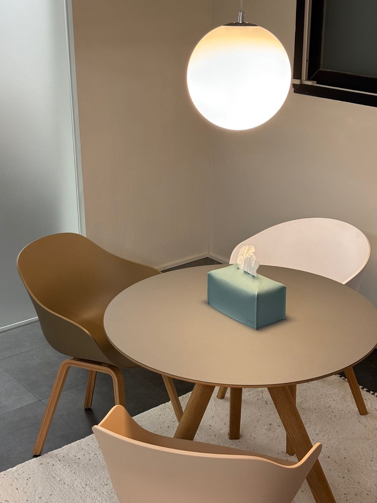

지원 동기를 정리하고 싶어요
관심을 갖게 된 실제 계기와 대학에서 배우고 싶은 내용을 연결해 글의 흐름을 잡고 싶은 학생에게 맞습니다.
PROGRAM / EXAM & INTERVIEW
나의 경험을 지원 동기와 연결하고, 글과 말로 차근차근 준비합니다.

01 / FOR YOU
관심을 갖게 된 실제 계기와 대학에서 배우고 싶은 내용을 연결해 글의 흐름을 잡고 싶은 학생에게 맞습니다.
지원 전형에 맞춰 글쓰기와 답변 구조를 살펴보세요. 준비한 답안과 대학의 공식 안내를 모아 상담할 내용을 정리합니다.
자신의 경험을 말로 설명하고 싶은 학생에게 맞습니다. 결론을 먼저 정리한 뒤 이유와 경험을 덧붙여 보세요.
02 / ONE TO ONE
관심 과정과 목표 일정, 공부할 수 있는 시간을 알려 주세요. 최근 교재와 학습 기록을 준비해 주세요.
최근 문제와 작성한 글을 함께 살펴봅니다. 익숙한 부분과 어려운 부분을 나누어 현재 위치를 정리합니다.
현재 수준과 목표에 맞춰 1:1로 준비합니다. 학습 순서와 복습할 내용을 함께 정리합니다.
이전 학습을 다시 살펴보고 다음 과제를 정리합니다. 혼자 설명할 수 있게 된 부분을 확인합니다.
실제 경험과 지원 동기, 학업 계획의 연결을 살펴보세요.
03 / CURRICULUM
관심 분야와 실제 경험을 모읍니다. 공식 모집요강에서 필요한 서류와 전형 방식을 확인하며 준비할 자료를 정리합니다.
지원 동기와 학업 계획의 흐름을 살펴봅니다. 지망이유서에 쓴 내용을 말로 설명하고 추가로 물어볼 만한 질문을 정리합니다.
질문에 맞춰 결론·이유·경험을 연결해 답해 봅니다. 준비한 글과 답변의 사실 관계를 비교하고 보완할 부분을 정리합니다.
추천 시작 시기는 출원 서류와 면접 일정을 함께 고려해 정합니다. 서류 분량, 본고사 범위와 면접 방식은 지원하는 대학의 해당 연도 공식 모집요강에서 확인하세요.
일반적인 예시
일본어와 일본 문화에 관심이 많아서 일본에서 공부하고 싶습니다.
일본어로 읽은 글의 표현을 비교하며 언어와 문화의 관계에 관심을 갖게 되었습니다. 이 관심을 바탕으로 언어가 쓰이는 맥락을 더 배우고 싶습니다.
04 / UNIVERSITIES
아래 수강 후기에서 확인되는 합격 대학입니다.
05 / REVIEWS
면접에서 자신이 하고자 하는 바를 잘 표현해서 합격이라는 결과를 받을 수 있었다고 생각합니다 !
면접 때 떨지 않고 잘 할 수 있었습니다!!
06 / TUITION
강사 1:1
주 1회 · 월 4회
지망이유서·본고사·면접
원장 직강 1:1
주 1회 · 월 4회
1회 120분
3개월 이상 등록 시 10%, 6개월 이상 등록 시 15% 할인됩니다. 자세한 내용은 상담에서 안내해 드립니다.
위 금액은 1:1 수업 기준입니다.
07 / Q&A
관심을 갖게 된 실제 계기와 경험부터 정리하세요. 학부에서 배우고 싶은 내용은 대학 공식 자료로 확인해 주세요.
결론과 근거를 자신의 말로 설명해 보세요. 경험의 사실 관계를 유지하며 후속 질문에도 답할 수 있도록 연습합니다.
공식 모집요강과 작성한 글을 준비하세요. 글이 없다면 관심 분야와 경험, 출원 및 면접 일정을 메모해 주세요.
CONSULTATION
목표 대학과 출원 일정을 알려 주세요.
신사역 8번 출구 · 도보 10분 · 발렛 주차 가능
최종 수정일: 2026.10.16